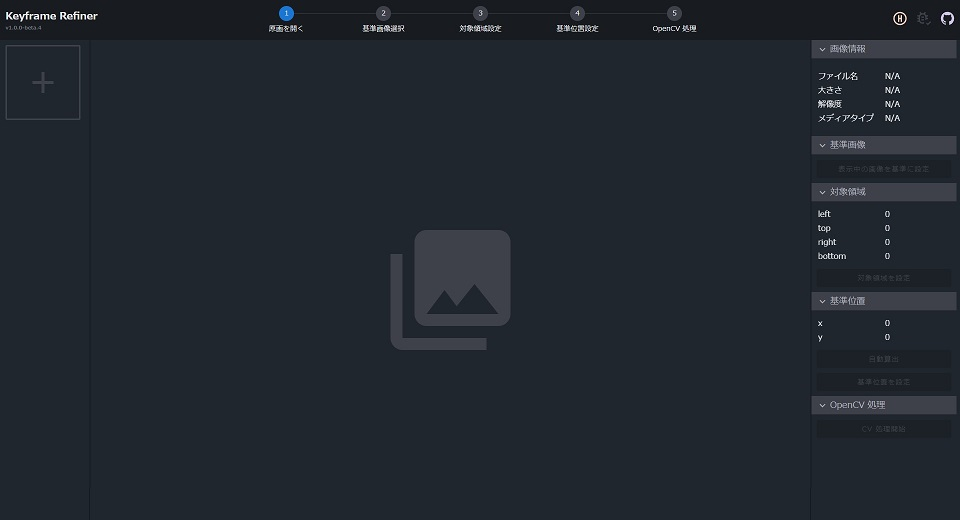

HOME
SKILLS
WORKS
Taiki Nakamura
学生
画像処理|3DCG
GitHub
Twitter
Keyframe Refiner

概要・開発目的
手書きアニメーション制作において発生する用紙の位置ずれを自動的に修正するアプリケーション。 原画やレイアウトをスキャンする際に位置ずれが発生してしまう。 それを現在アニメーターが手動で修正しているため非効率。そこで、自動的に位置ずれを修正するアプリケーションを開発した。
開発
２人組で開発。私は、企画・アルゴリズム構築・プロトタイプ開発・アイコンデザイン・宣伝を担当。 もう１人はアルゴリズム構築・UI・Webアプリケーション開発を担当。使用言語はJavaScript（Svelteフレームワーク）。 プロトタイプ段階ではPythonとJavaScriptを使用。制作期間は2021年10月から12月。ただし、企画から第1号目の完成までは約3週間、その後は改良を加え続けた。
工夫点
アルゴリズムの改良。初期アルゴリズムでは円検出を用いていたため、平行移動のずれには対処できるが回転のずれに対処ができない。 このアルゴリズムを改良して矩形検出に改良することで平行移動・回転の両方に対して対処できるようになった。
苦労点
クリエイターの方が何を求めているかということが苦労が多かった。各クリエイターで意見が相違しているため、まず何を優先的に対処するべきかの 見定めに困難があった。
リンク
https://github.com/keyframe-refiner/keyframe-refiner